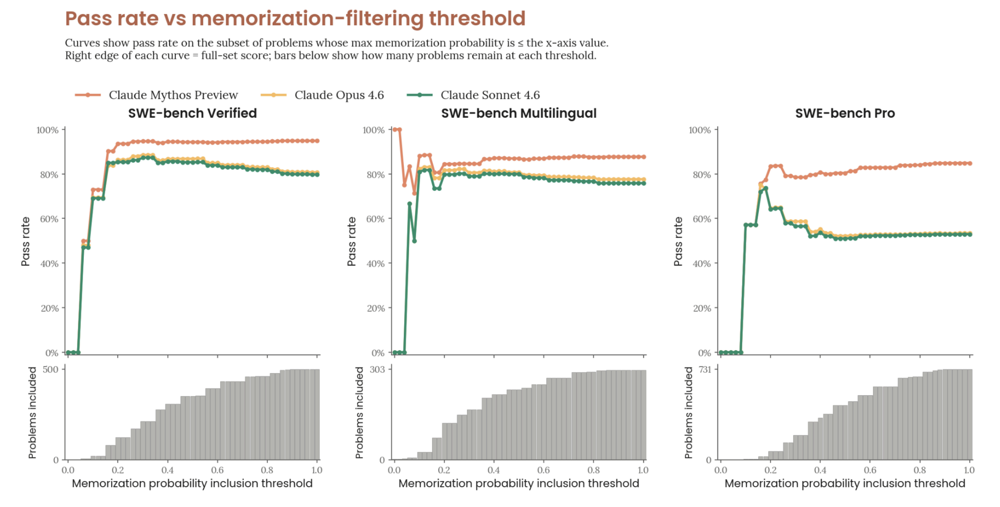
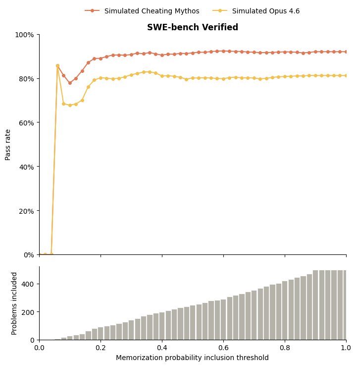

Mythos’ system card contains the following graph to support its argument that Mythos performs better on SWE-bench:

Anthropic and others are worried LLMs are memorizing SWE-bench, so they asked an LLM to estimate the probability that a solution is memorized. Next, they calculated the pass rate if they only included solutions an LLM judged to be memorized with less than 5% confidence, 10% confidence, and so on.
Picking a point on the graph for example: if they include ~400 out of 500 solutions because an LLM has judged them as memorized with a probability <= 60%, Mythos’ success rate is ~92% while Opus 4.6’s is ~82%. This is a hard graph. Read the full caption1 if you need to. Take your time. I stared at it for a long time.
After presenting this graph, they conclude:
Our detectors are imperfect, but this result is robust to the choice of threshold and consistent with Claude Mythos Preview’s gains on internal benchmarks not present in any training corpus. We conclude that memorization does not explain its SWE-bench improvements.
Gains on internal benchmarks count for something, but does an imperfect memorization detector’s consistent judgment that Mythos has genuine gains on SWE-bench support their claim at all?
It doesn’t. It is perfectly possible to have an imperfect cheating detector consistently misjudge a model whose gains are entirely explained by cheating as making genuine gains. Here’s a short python program proving it.
Let’s start by modeling an LLM like Opus 4.6 that gets the right answer 80% of the time and has an equally likely chance of cheating between 5% and 90%. These bounds are chosen here because according to the above graph, it looks like LLMs don’t like giving probability estimates below 5% and above 90%.
We’ll do this by simply generating an array of pairs where the first item has an 80% of being 1 to represent a successfully solved problem and the second item is a probability the LLM would give for the solution being memorized:
opus_4_6 = [
(1, random.uniform(.05, .9))
if random.random() < 0.8
else (0, random.uniform(.05, .9))
for _ in range(500)
]
Next, we model a cheating Mythos whose 10% performance gain is — by hypothesis — entirely explained by cheating. In this array, half the time opus_4_6 got the answer wrong, we give mythos a 50% chance of getting the right answer, and when it does, we increment the probability of cheating with a random value somewhere between 10% and 65% with a cap at 90%. (again, since in Anthropic’s data we see LLMs don’t like to give estimates above ~90%). This is meant to model how Anthropic’s cheating detection is imprefect. It’s also assuming that the probability of memorization is strictly higher in Mythos. This is reasonable given its a bigger model w/ more training data.
mythos = [
(1, min(.9, og[1] + random.uniform(.1, .65)))
if random.random() < 0.5 and og[0] != 1
else og for og in opus_4_6
]
If you graph this data, you can get something that looks very similar to the graph above:

Obviously, a perfect cheating detector wouldn’t have this problem, but Anthropic admits their detection isn’t perfect. Until we quantify the degree of their detector’s imperfection, citing it as evidence of Mythos’ performance gains should hold zero weight.
Here’s all the code if you want to try it yourself. h/t to Claude for figuring out the visualization code and a few other things. h/t to Antrhopic for making Claude.
-
The full caption is on page 186 of the system card ↩︎